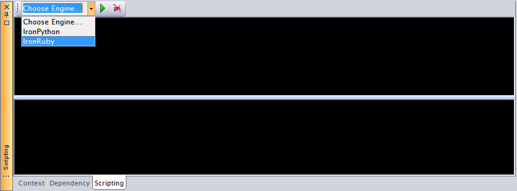
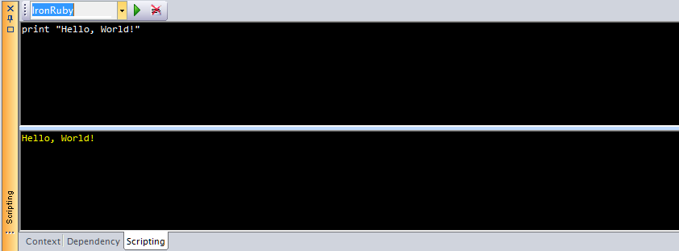
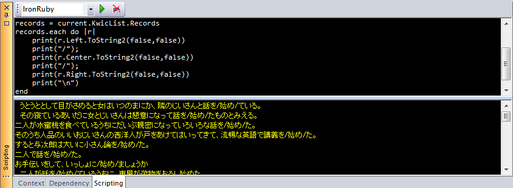

Scripting機能とは、スクリプト言語の処理系をアプリケーションにプラグイン的に組み込み、その処理系上で任意のプログラムを実行する機能です。アプリケーション外でスクリプト言語を動作させる場合と異なり、その時点でアプリケーション内に存在するオブジェクトにアクセスできるため、マクロ処理を記述するような用途に用いることができます。 ChaKi.NETでは、IronPythonとIronRubyの2つの処理系をサポートしています。
Scripting機能は、Scriptingパネルを介して使用できます。Scriptingパネルが表示されていない場合は、メインメニューから"View - Scripting Panel"を選択して表示させます。

IronPython, IronRubyのランタイムが必要ですので、ChaKi.NETのインストール場所にそれらが存在しない場合は、各パッケージをダウンロードして、パッケージに含まれるdllをコピーして下さい。
- IronPythonの配布元: http://ironpython.codeplex.com/
コピーするDLL: IronPython.dll, IronPython.Modules.dll, Microsoft.Dynamic.dll, Microsoft.Scripting.dll, Microsoft.Scripting.Core.dll, Microsoft.Scripting.Debugging.dll, Microsoft.Scripting.ExtensionAttribute.dll
- IronRubyの配布元: http://ironruby.net/
コピーするDLL: IronRuby.dll, IronRuby.Libraries.dll, IronRuby.Libraries.YAML.dll, Microsoft.Dynamic.dll, Microsoft.Scripting.dll, Microsoft.Scripting.Core.dll, Microsoft.Scripting.Debugging.dll, Microsoft.Scripting.ExtensionAttribute.dll
Scriptingパネルは上部がスクリプトを記述するペインで、下部が実行結果を表示するペインとなります。 例えば、上のパネルに次のように入力して、実行ボタンを押すと、スクリプトエンジンがDLLから動的に読み込まれ、スクリプトが実行されます。

スクリプトからは、ChaKi.NETのpublicなクラスを参照可能です。例えば、KwicViewの内容をExcelエクスポート用のメソッドを用いてリストするには、次のようにします(IronRuby)。
load_assembly "System.Windows.Forms"
load_assembly "ChaKi.NET"
load_assembly "ChaKiEntity"
current = ChaKi::MainForm.Instance.KwicView.GetModel()
records = current.KwicList.Records
records.each do |r|
print(r.Left.ToString2(false,false))
print("/");
print(r.Center.ToString2(false,false))
print("/");
print(r.Right.ToString2(false,false))
print("\n")
end
実行結果は次のようになります。
